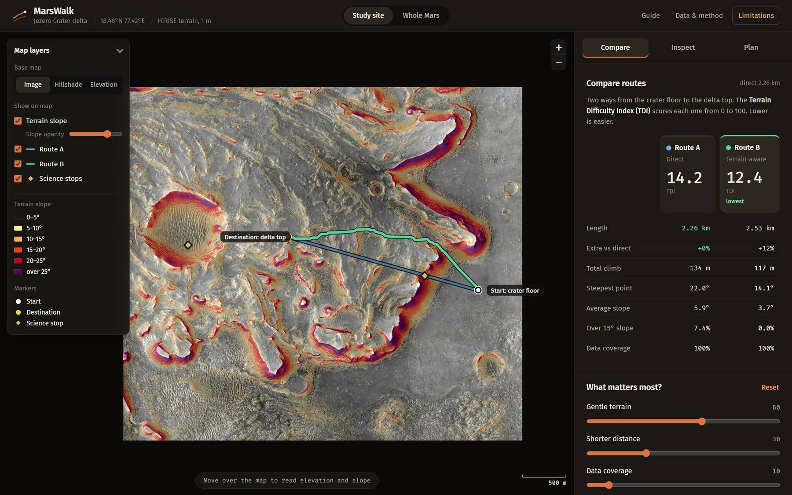
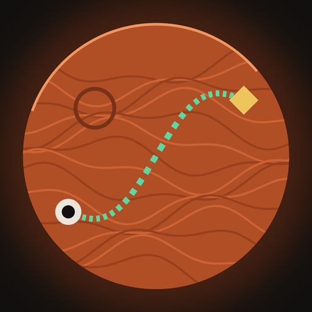
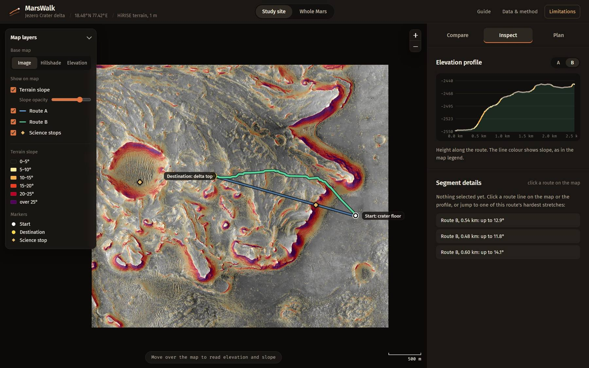

Team Red Route Lab
Plan an astronaut's walk on Mars, and see the evidence behind every route.
A picture of Mars shows where to go, not how steep it is. And a single "best route" label means little unless you can see the data, the method and the limits behind it.

Mars Reconnaissance Orbiter, 1 m posts. Every slope, climb and score comes from this file, read straight from the Planetary Data System.
DTEEC_002387_1985_003798_1985_A01The real orbital photo of the site, on the same grid as the terrain.
PSP_002387_1985_RED_C_01_ORTHOThe Whole Mars view, showing where Jezero sits on the planet.
Average to a 3 m grid, correct for latitude, compute slope, then an A* search finds a path that avoids slopes over 25°.
automated checks pass, including values against the raw NASA file and a hand calculation
median difference from Horn's slope method used by GIS software
router settings where the terrain-aware route still wins
A research and education prototype. It screens terrain only (no small rocks, sand, radiation or lighting) and does not certify any route as safe.
Rock abundance, thermal inertia and radiation, including Emirates Mars Mission atmosphere data.
Model elevation errors, and test the scores against Perseverance's real drive paths.
Sunlight and line-of-sight to the base, and a tablet view to carry on the walk.
Students can see how terrain shapes exploration, and try to beat the computer's route.